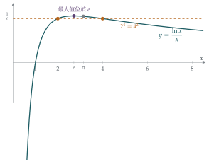

STEP II 2013，第 1 題
繼續之前，請先閱讀題目（原題為英文）。題目載於 STEP Support Programme 的題目資料庫： step.maths.org/questions/13-s2-q1
引子
\(\pi^e\) 和 \(e^\pi\)，哪一個較大？計算機一秒鐘就能告訴你：\(e^\pi \approx 23.14\) 而 \(\pi^e \approx 22.46\)。但計算機只告訴你結果是這樣，卻沒有告訴你為甚麼，更無法一次過解答無窮多條同類的問題。\(3^\pi\) 比 \(\pi^3\) 大嗎？除了顯而易見的 \(n = m\) 之外，還有沒有整數滿足 \(n^m = m^n\)？
原來這些問題全都關乎同一條曲線 \(y = \ln x\)，以及與它相交的直線。本題說明，只要運用得當，一幅草圖就能解決一些單靠代數看似無從入手的大小比較，也說明 \(e\) 這個數怎樣自然而然地成為分界點。
動筆之前
取對數（logarithm）後，\(a^b = b^a\) 等同於 \(b\ln a = a\ln b\)。試把這條式重新整理，使 \(a\) 只出現在一邊，\(b\) 只出現在另一邊。
\(b\ln a = a\ln b\) 等同於 \[\frac{\ln a}{a} = \frac{\ln b}{b}.\] 因此，每次比較 \(a^b\) 與 \(b^a\)，其實都是比較同一個函數 \(h(x) = \frac{\ln x}{x}\) 在 \(a\) 和 \(b\) 兩處的值。而 \(\frac{\ln a}{a}\) 正是由原點（origin）連到曲線 \(y = \ln x\) 上的點 \((a, \ln a)\) 的直線的斜率（gradient）。這就是本題與直線有關的原因。
逐步解題
階段 1 通過原點的切線
若 \(y = mx\) 與 \(y = \ln x\) 在 \(x = x_0\) 處相切，哪兩條方程必須成立？
直線與曲線必須相交，即 \(mx_0 = \ln x_0\)，而且斜率相同，即 \(m = 1/x_0\)。把第二式代入第一式，得 \(1 = \ln x_0\)，所以 \(x_0 = e\) 及 \(m = 1/e\)。由原點引出的切線（tangent）與曲線相切於 \((e, 1)\)。
若 \(y = mx\) 改為與曲線相交於 \(x = a\) 和 \(x = b\)，則 \(\ln a = ma\) 及 \(\ln b = mb\)，所以 \(\frac{\ln a}{a} = m = \frac{\ln b}{b}\)，由此得 \(b\ln a = a\ln b\)，因而 \(a^b = b^a\)。■
至於草圖：一條通過原點、比切線稍為平坦的直線會與曲線相交兩次，切點兩側各一次，所以 \(a < e < b\)。斜率大於 \(1/e\) 的直線則完全碰不到曲線，因為 \(\ln x\) 是凹（concave）函數，整條曲線都在其切線 \(y = x/e\) 之下。
階段 2 與 \(y\) 軸相交於原點上方的直線
現在直線是 \(y = mx + c\)，其中 \(c > 0\)。試以 \(m\) 和 \(c\) 表示 \(\frac{\ln p}{p}\) 和 \(\frac{\ln q}{q}\)。
由 \(\ln p = mp + c\) 及 \(\ln q = mq + c\)，得 \[\frac{\ln p}{p} = m + \frac{c}{p}, \qquad \frac{\ln q}{q} = m + \frac{c}{q}.\] 由於 \(c > 0\) 且 \(p < q\)，可知 \(\frac{c}{p} > \frac{c}{q}\)，所以 \(\frac{\ln p}{p} > \frac{\ln q}{q}\)。兩邊乘以 \(pq > 0\)，得 \(q\ln p > p\ln q\)，因此 \(p^q > q^p\)。■
從幾何角度看：若通過 \((p, \ln p)\) 和 \((q, \ln q)\) 兩點的直線與 \(y\) 軸相交於原點上方，那麼從原點望去，前一點的仰角比後一點的更陡。
階段 3 \(e\) 右方的弦
設 \(e \leq p < q\)。由 \((p, \ln p)\) 連到 \((q, \ln q)\) 的弦（chord），其斜率小於曲線在 \(p\) 處的斜率。為甚麼？又為甚麼這樣會令它的 \(y\) 截距（intercept）為正數？
因為 \(\ln x\) 是凹函數，它的斜率 \(1/x\) 遞減，所以由 \(p\) 到 \(q\) 的弦比 \(p\) 處的切線平坦：弦的斜率 \(s\) 滿足 \(s < \frac1p\)。弦的 \(y\) 截距是 \[c = \ln p - sp > \ln p - \frac{1}{p} \cdot p = \ln p - 1 \geq 0,\] 當中用到 \(p \geq e\)。所以這條弦與 \(y\) 軸相交於原點上方。■
利用這個結果和第 2 階段，判斷 \(\pi^e\) 與 \(e^\pi\) 哪一個較大。
取 \(p = e\) 及 \(q = \pi\)。連接這兩點的弦的截距為正數，所以根據第 2 階段，\(p^q > q^p\)，即 \[e^\pi > \pi^e.\]
階段 4 與切線平行的弦
現在假設由 \(p\) 到 \(q\) 的弦的斜率剛好是 \(\frac1e\)，與切線 \(y = \frac{x}{e}\) 的斜率相同。
這條弦與 \((e, 1)\) 處的切線平行。由於 \(\ln x\) 是凹函數，曲線位於該切線之下。這條弦與 \(y\) 軸相交於原點的上方還是下方？
這條弦是直線 \(y = \frac{x}{e} + c\)，其中 \(c\) 為某個常數。它的兩個端點都在曲線上，而曲線位於切線 \(y = \frac{x}{e}\) 上或其下方，並且只在 \(x = e\) 處與切線相接。兩個端點不可能同時位於 \(x = e\)，所以最少有一個端點嚴格位於切線下方，於是整條平行的弦都在切線之下：\(c < 0\)。現在以 \(c < 0\) 重做第 2 階段：不等式的方向反轉，\(\frac{\ln p}{p} < \frac{\ln q}{q}\)，因此 \(q^p > p^q\)。■
回顧
化為單一函數。比較 \(a^b\) 與 \(b^a\)，變成了比較 \(h(a)\) 與 \(h(b)\)，其中 \(h(x) = \frac{\ln x}{x}\)。
有理有據的草圖。每一處「藉草圖說明」的背後，都有確切的事實支持：\(\ln\) 的凹性（弦在曲線之下，切線在曲線之上），以及截距的正負。
\(e\) 的特殊角色。由原點引出的切線在 \(x = e\) 處與曲線相切，而這一點正是以上所有比較的分界點。
背後的數學
本題的一切，都可以在 \(h(x) = \frac{\ln x}{x}\) 的圖像中看到（圖 3.5.1）。它的導數（derivative）是 \(h'(x) = \frac{1 - \ln x}{x^2}\)，所以 \(h\) 在 \((0, e)\) 上遞增，在 \(x = e\) 處達到最大值（maximum）\(\frac1e\)，然後遞減並趨向 \(0\)。一條高度為 \(m\) 的水平線，若高度介乎 \(0\) 與 \(\frac1e\) 之間，便會與圖像相交兩次，交點為 \(a < e < b\)，且 \(h(a) = h(b)\)，這正正就是 \(a^b = b^a\)。在 \(e\) 的右方，\(h\) 遞減，所以當 \(e \leq p < q\) 時，我們有 \(h(p) > h(q)\)，即 \(p^q > q^p\)。特別地，\(e^\pi > \pi^e\)；更一般而言，對每個 \(x \neq e\) 都有 \(e^x > x^e\)：在這場較量中，沒有其他數能勝過 \(e\)。

\(x^y = y^x\) 的所有解
哪些相異的正實數對滿足 \(x^y = y^x\)？有一個巧妙的方法可以把它們全部找出來。設 \(y = tx\)，其中 \(t > 1\)；那麼 \(x^{tx} = (tx)^x\) 給出 \(x^t = tx\)，所以 \(x^{t-1} = t\)，並且 \[x = t^{1/(t-1)}, \qquad y = t^{t/(t-1)}.\] 寫成 \(t = 1 + \frac1n\)，便得 \(x = \left(1 + \frac1n\right)^n\) 及 \(y = \left(1 + \frac1n\right)^{n+1}\)。取 \(n = 1\) 時，這就是 \((2, 4)\)；取 \(n = 2\) 時則是 \(\left(\frac94, \frac{27}{8}\right)\)，而的確有 \(\left(\frac94\right)^{27/8} = \left(\frac{27}{8}\right)^{9/4}\)。當 \(n \to \infty\) 時，兩者都趨向 \(e\)，也就是兩個分支會合之處。1728 年，丹尼爾·伯努利（Daniel Bernoulli）與哥德巴赫（Christian Goldbach）曾在書信中討論這個問題，其後歐拉（Euler）亦有研究。
最經濟的底
函數 \(x^{1/x} = e^{h(x)}\) 同樣在 \(x = e\) 處取得最大值。這解答了一個有趣的問題：假如一個記數系統的「成本」是它的底（base）乘以所需的數位數目，那麼最經濟的底就是 \(e\)；若只考慮整數，則是 \(3\)（僅僅勝過 \(2\)）。有少數實驗性質的電腦採用過以 \(3\) 為底的記數法，例如 1958 年蘇聯的 Setun。
思維技巧
一條不等式或方程，若當中兩個量糾纏在一起，往往可以化為關於同一個函數在兩點取值的命題。
一旦找到這個函數，它的圖像（在哪裏遞增、在哪裏遞減、在哪裏達到頂點）就能一次過回答所有問題。在這裏，\(a^b\) 與 \(b^a\) 的比較變成了 \(h(a)\) 與 \(h(b)\) 的比較。
延伸練習
整數。試做 STEP I 1988，第 1 題。
更多比較。試做 STEP II 2025，第 3 題 （載於 OCR 提供下載的 2025 年試卷 zip 檔案內）。該題利用本節的圖像，解決更多 \(a^b\) 與 \(b^a\) 之間的比較，其中一個要靠 \(e\) 的數值界限才能完成。
一行證明。利用當 \(x \neq 0\) 時 \(e^x > 1 + x\)，並取 \(x = \frac{\pi}{e} - 1\)，直接證明 \(e^\pi > \pi^e\)。
延伸閱讀
Eli Maor, e: The Story of a Number（Princeton University Press）。講述 \(e\) 的歷史，包括方程 \(x^y = y^x\)。
Paul Nahin, An Imaginary Tale（Princeton University Press）。不只談 \(\sqrt{-1}\)：書中滿載正是這一類的有趣計算。
Michael Spivak, Calculus（Cambridge University Press）。第 11 章以完全嚴謹的方式，講解如何運用導數了解圖像的形狀。